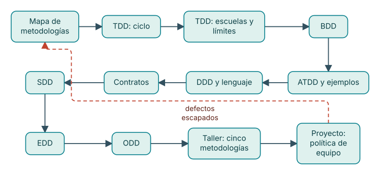

La Parte 47 enseñó a especificar, delegar y detener a un agente. La pregunta cambia de «¿cómo especifico y controlo a un agente?» a «¿qué prácticas ordenan el desarrollo alrededor de un oráculo, cuáles son sus costos y qué defectos deja pasar cada una?». Esta parte compara ocho metodologías de desarrollo (TDD, BDD, ATDD y Specification by Example, DDD, diseño y pruebas de contrato, SDD, EDD y ODD) por la pregunta que ordena cada una, el oráculo que deja y su punto ciego, usando un único caso sintético: **el núcleo de *Avisos***, la regla que decide qué recordatorio de entrega se envía a cada estudiante (72, 24 y 1 horas antes del vencimiento, nunca a quien ya entregó ni tras el vencimiento, solo el más urgente tras una caída y con silencio por curso salvo en la última hora). Cada metodología se mide sobre ese mismo núcleo con mutantes escritos a mano.
Pregunta rectora
Antes del recorrido clase por clase
Esta parte no enseña una herramienta ni defiende una escuela. Enseña a leer una metodología como un oráculo con un costo y un punto ciego: qué cosa decide que el resultado es correcto, qué defectos no ve y cuándo se ejecuta. Compara cinco oráculos sobre el mismo núcleo y 18 defectos sembrados (SE-541), reconstruye el ciclo rojo-verde-refactor paso a paso (SE-542), mide el costo de acoplar las pruebas a la implementación en dos estilos (SE-543), ejecuta escenarios en lenguaje de negocio (SE-544) y compara conjuntos de ejemplos de aceptación (SE-545), mide una palabra con tres sentidos y una traducción entre contextos (SE-546), compara tres detectores de cambios de un proveedor (SE-547), comprueba la deriva entre una especificación y su código (SE-548), simula la puerta de una evaluación con ruido (SE-549) y evalúa un historial de Git contra un flujo para agentes (SE-550). Después aplica cinco metodologías al mismo cambio (SE-551) y escribe una política de equipo (SE-552).

El diagrama se lee de izquierda a derecha y no es un proceso obligatorio. El retorno indica que los defectos que escapan a la política vuelven al mapa: una política se revisa con la evidencia de lo que no vio.
Resultados acumulativos
Podrás medir qué defectos mata cada tipo de oráculo (caso feliz, ejemplos, escenarios con reloj, contrato y modelo de referencia) y reconocer los mutantes equivalentes; reconstruir un ciclo de TDD de ocho pasos comprobando el rojo y el verde de cada uno y usar los mutantes sobrevivientes para decidir la prueba siguiente; comparar un estilo de pruebas con dobles con estado y otro con dobles simulados ante cuatro refactores, un cambio de contrato y seis defectos.
Podrás formular escenarios con el vocabulario del negocio, medir la contribución de cada uno a la detección de defectos y encontrar los que no afirman nada; construir conjuntos de ejemplos de aceptación y explicar por qué más ejemplos no es mejor si no varían las dimensiones del problema; contar los sentidos de una palabra del dominio en un corpus y probar que una traducción entre contextos evita un error silencioso.
Podrás demostrar que una aserción desaparece bajo la opción de optimización de Python, comparar tres formas de detectar cambios de un proveedor por aciertos y falsas alarmas y escribir el contrato mínimo de un consumidor; generar código desde una especificación legible por máquina y comprobar diez derivas, incluida la que ninguna máquina ve; simular una puerta de release con ruido y fijar umbral y margen; evaluar con Git real un historial contra las reglas de un flujo para agentes y contrastar ODD con SDD con sus evidencias declaradas.
Podrás aplicar cinco metodologías al mismo cambio con los mismos mutantes, recomendar una combinación y escribir una política de equipo con clasificación de cambios, evidencia exigida, excepciones y revisión.
Prerrequisitos enlazados
- Parte 12 — Ingeniería de requisitos: criterios de aceptación y ambigüedad.
- Parte 13 — Especificaciones, contratos y modelos: ejemplos de especificación y contratos de API.
- Parte 25 — Diseño, patrones y refactorización: costuras, inyección de dependencias y refactor con red de seguridad.
- Parte 27 — Arquitectura de software y dominio: DDD estratégico y táctico (
SE-329). - Parte 35 — Estrategia y técnicas de prueba: análisis de valores límite, dobles de prueba y mutación.
- Parte 36 — Calidad, rendimiento y resiliencia: riesgo y escenarios de calidad.
- Parte 46 — Desarrollo de software asistido por IA: evaluaciones de asistentes.
- Parte 47 — SPEC, agentes y ciclo de vida agentic: especificación durable, agentes y ciclo agentic.
- Python 3.11+ y terminal; los experimentos usan solo la biblioteca estándar, y la clase
SE-550además requiere Git instalado.
Bloques y progresión
- Elegir y construir con pruebas: las clases 481 a 483 miden qué defectos deja pasar cada oráculo, reconstruyen el ciclo de TDD y comparan los dos estilos de prueba.
- Acordar el qué y el con qué palabras: las clases 484 a 486 llevan los ejemplos al lenguaje del negocio, eligen los de aceptación y delimitan el vocabulario por contexto.
- Prometer, mantener y medir: las clases 487 a 490 tratan los contratos, la especificación como fuente, las evaluaciones con ruido y un flujo de trabajo para agentes.
- Aplicar e integrar: las clases 491 y 492 comparan cinco metodologías sobre un cambio y escriben la política del equipo.
Evidencia medida y límites
Las figuras y los ejemplos de esta parte usan experimentos ejecutados con CPython 3.12.9 en Windows 11 y repetidos con CPython 3.12.3 en Ubuntu bajo WSL2; los recuentos son idénticos en ambos sistemas y los tiempos de reloj varían entre equipos. No se invocó ningún modelo de lenguaje, no se ejecutó ninguna herramienta de agentes de terceros (Gentle AI, Spec Kit, Kiro, OpenSpec, Tessl, Pact, Cucumber) y no se evaluó ningún producto real. Lo que se ejecutó es código propio de la parte, con la biblioteca estándar.
Los experimentos son: un núcleo de 20 líneas con 20 variantes (18 que cambian el comportamiento y 2 equivalentes) y cinco oráculos, de los que el caso feliz mata 7, las ocho pruebas de ejemplo 15, los escenarios 17, el contrato 13 y el modelo de referencia 18 de 18 (SE-541); un ciclo de ocho versiones sucesivas con la curva de mutantes muertos 1, 6, 8, 9, 9, 11, 14 y 15 y tres pruebas guiadas por los sobrevivientes que llevan a 18 de 18 (SE-542); dos suites sobre el mismo servicio con cuatro refactores, un cambio de contrato y seis defectos (SE-543); nueve escenarios con 32 pasos y 10 definiciones de paso, que matan 15 de 18 (SE-544); cuatro conjuntos de ejemplos de 5, 12, 20 y 144 casos que matan 10, 11, 8 y 17 de 18 (SE-545); un recuento léxico de 4 249 frases sobre «entrega» en las Partes 00–22, 24–25, 27, 29, 31–33, 35–36, 38–41, 43–44 y 46–47 y una traducción de ocho entregas (SE-546).
Siguen una ejecución con y sin -O en dos procesos reales y doce cambios de un proveedor evaluados con tres detectores (SE-547); un generador de código desde una especificación y diez derivas inyectadas, de las que se detectan 9 (SE-548); una simulación con 4 000 repeticiones por celda de una puerta de evaluación con 20 a 1 600 casos y 1 o 3 repeticiones (SE-549); dos historiales de Git reales creados en un directorio temporal y evaluados con tres reglas (SE-550); la comparación de cinco metodologías sobre siete silencios mal hechos (SE-551); y una simulación de cinco políticas sobre 300 cambios sintéticos (SE-552).
Los parámetros (los 20 mutantes, los artefactos de cada metodología, los escenarios, los doce cambios del proveedor, las diez derivas, las probabilidades de acierto de la evaluación, los dos historiales de Git, los costos y las probabilidades de la simulación de políticas) son construcciones del autor. Ninguna cifra es una tasa de defectos real, y la simulación de SE-549 y la de SE-552 son modelos con supuestos declarados: solo las tasas de detección de la segunda proceden de un experimento real. La clasificación de «entrega» de SE-546 usa reglas léxicas burdas que dejan sin sentido reconocible el 83 % de las frases.
Lo que no se hizo: no se midió ningún equipo, productividad, esfuerzo humano ni mantenimiento; no se evaluó el efecto de ninguna metodología en la calidad del diseño; no se comparó ODD con SDD más allá de su documentación; no se ejecutó Gentle AI ni ninguna herramienta; y la afirmación de que TDD mejora el diseño no se midió ni se defiende. Las afirmaciones sobre metodologías se atribuyen a sus fuentes y se tratan como descripciones, no como resultados. Una revisión editorial humana independiente de la parte sigue pendiente.
Guía razonada clase por clase
*Avisos* mantiene su regla de recordatorios mientras cambia la práctica con que se verifica. Cada clase explica qué pregunta ordena la metodología, qué experimento la mide, qué no demuestra y qué evidencia permitiría abandonar la conclusión.
Bloque 1 — Elegir y construir con pruebas
SE-541 — Mapa de metodologías: qué decide cada una y cómo elegir
Una metodología es un oráculo con un costo y un punto ciego. La clase ejecuta cinco oráculos sobre 18 defectos sembrados, mira qué deja vivo cada uno y muestra que las parejas de naturaleza distinta cubren lo que uno solo no ve.
El estudiante entrega el mapa de las ocho metodologías con pregunta, oráculo y punto ciego. SE-542 reconstruye el ciclo de TDD.
SE-542 — TDD: ciclo rojo-verde-refactor y diseño emergente
Una prueba que nunca falló no tiene información. La clase reconstruye ocho pasos, comprueba el rojo y el verde de cada uno, mide la curva de mutantes muertos y usa los tres sobrevivientes para escribir las pruebas que faltan.
El estudiante entrega el registro del ciclo con la evidencia de cada rojo. SE-543 compara los dos estilos de prueba.
SE-543 — TDD en la práctica: escuelas de Londres y clásica, y sus límites
La diferencia entre estilos aparece cuando el interior cambia sin cambiar el resultado. La clase aplica cuatro refactores, un cambio de contrato y seis defectos a dos suites del mismo servicio.
El estudiante entrega las dos suites y una regla de doble por colaborador. SE-544 pasa de las pruebas a la conversación.
Bloque 2 — Acordar el qué y con qué palabras
SE-544 — BDD: ejemplos, conversación y lenguaje compartido
BDD es descubrimiento, formulación y automatización; la herramienta es solo la tercera. La clase ejecuta nueve escenarios, mide la contribución de cada uno y encuentra los que no afirman nada.
El estudiante entrega una sesión de descubrimiento y sus escenarios medidos. SE-545 trata qué ejemplos elegir.
SE-545 — ATDD y Specification by Example: aceptación ejecutable
Más ejemplos no es mejor si no varían las dimensiones del problema. La clase compara cuatro conjuntos de ejemplos y explica por qué uno de 144 deja vivo un mutante que un ejemplo bien elegido mataría.
El estudiante entrega la tabla de dimensiones de una regla suya y un conjunto de ejemplos medido. SE-546 trata las palabras de esos ejemplos.
SE-546 — DDD como lenguaje ubicuo y contexto para agentes
Una palabra con varios sentidos sin frontera produce errores silenciosos. La clase cuenta los sentidos de «entrega» en el corpus del programa y prueba que sin traducción entre contextos el servicio no envía ningún aviso.
El estudiante entrega un glosario, un mapa de contextos y la prueba de la frontera. SE-547 trata lo que se promete en cada frontera.
Bloque 3 — Prometer, mantener y medir
SE-547 — Diseño por contrato y pruebas de contrato como oráculo
Una aserción puede desaparecer en producción y una alerta falsa enseña a ignorar. La clase ejecuta una precondición con y sin -O y compara tres detectores de cambios de un proveedor sobre doce cambios.
El estudiante entrega el contrato mínimo de un consumidor suyo. SE-548 lleva la idea de contrato a la especificación.
SE-548 — SDD: spec-first, spec-anchored y spec-as-source
La deriva se desplaza hacia lo que la máquina no sabe comprobar. La clase genera código desde una especificación y mide qué derivas ve un comprobador mecánico y cuál no.
El estudiante entrega una especificación legible por máquina con su comprobador. SE-549 pasa a los componentes probabilísticos.
SE-549 — EDD: evaluaciones como especificación y puerta de release
Una evaluación es un instrumento con ruido. La clase simula una puerta con 20 a 1 600 casos y 1 o 3 repeticiones y muestra que con 100 casos y una corrida más de una de cada cuatro regresiones de 5 puntos pasa.
El estudiante entrega una puerta con umbral, margen y zona de duda. SE-550 trata un flujo de trabajo para agentes.
SE-550 — ODD: desarrollo orgánico y su contraste con SDD
Un flujo documentado no es evidencia de efectividad; su forma sí se puede comprobar. La clase evalúa dos historiales de Git reales contra tres reglas y contrasta ODD con SDD con sus evidencias declaradas.
El estudiante entrega un documento de tarea y un comprobador de dos reglas. SE-551 compara las metodologías sobre un cambio.
Bloque 4 — Aplicar e integrar
SE-551 — Taller: un mismo cambio con cinco metodologías
El mismo cambio con cinco artefactos y la misma medida. El modelo ejecutable mata los siete silencios mal hechos y el contrato tres; lo que importa es qué deja vivo cada uno y por qué.
El estudiante entrega la comparación de sus cinco artefactos y una combinación justificada. SE-552 la convierte en política.
SE-552 — Proyecto: política metodológica de equipo con evidencia
Una política asigna menos evidencia a lo de bajo riesgo y más a lo de alto, y reconoce los cambios sin reglas deterministas. La clase simula cinco políticas sobre 300 cambios y escribe la del equipo con excepciones y revisión.
El estudiante entrega la política con su clasificación, su tabla de evidencia y su métrica de revisión. La Parte 48 la usa como entrada para estudiar el harness de un agente.
Resumen operativo del recorrido
| Clase | Núcleo profesional | Aporte acumulativo |
|---|---|---|
| SE-541 | Mapa de metodologías: qué decide cada una y cómo elegir | Entrega el mapa de las ocho metodologías con pregunta, oráculo y punto ciego |
| SE-542 | TDD: ciclo rojo-verde-refactor y diseño emergente | Entrega el registro del ciclo con la evidencia de cada rojo |
| SE-543 | TDD en la práctica: escuelas de Londres y clásica, y sus límites | Entrega las dos suites y una regla de doble por colaborador |
| SE-544 | BDD: ejemplos, conversación y lenguaje compartido | Entrega una sesión de descubrimiento y sus escenarios medidos |
| SE-545 | ATDD y Specification by Example: aceptación ejecutable | Entrega la tabla de dimensiones de una regla suya y un conjunto de ejemplos medido |
| SE-546 | DDD como lenguaje ubicuo y contexto para agentes | Entrega un glosario, un mapa de contextos y la prueba de la frontera |
| SE-547 | Diseño por contrato y pruebas de contrato como oráculo | Entrega el contrato mínimo de un consumidor suyo |
| SE-548 | SDD: spec-first, spec-anchored y spec-as-source | Entrega una especificación legible por máquina con su comprobador |
| SE-549 | EDD: evaluaciones como especificación y puerta de release | Entrega una puerta con umbral, margen y zona de duda |
| SE-550 | ODD: desarrollo orgánico y su contraste con SDD | Entrega un documento de tarea y un comprobador de dos reglas |
| SE-551 | Taller: un mismo cambio con cinco metodologías | Entrega la comparación de sus cinco artefactos y una combinación justificada |
| SE-552 | Proyecto: política metodológica de equipo con evidencia | Entrega la política con su clasificación, su tabla de evidencia y su métrica de revisión |
Fuentes
- Beck, «Canon TDD», Fowler, «Test Driven Development» y Fowler, Beck y Heinemeier Hansson, «Is TDD Dead?» — definición del flujo de TDD y debate sobre su valor de diseño; autoría de Beck y Fowler.
- Fowler, «Mocks Aren't Stubs» y
unittest.mock— dobles, verificación de estado y de comportamiento, y estilos clásico y de Londres; autoría de Fowler y documentación de Python. - Cucumber, «Behaviour-Driven Development», «Gherkin Reference», North, «Introducing BDD», Agile Alliance, «Three Amigos» y Adzic, «Specification by Example» — BDD, ATDD y especificación por ejemplos; autoridad: Cucumber, North, Agile Alliance y Adzic.
- Evans, «Domain-Driven Design Reference» y Domain Language — lenguaje ubicuo, contextos delimitados y capa anticorrupción; autoría de Evans.
- Meyer, «Applying Design by Contract», la sentencia
assert, opciones de línea de comandos de Python, Pact y JSON Schema — contratos y pruebas de contrato; autoridad: IEEE Computer, documentación de Python, Pact y JSON Schema. - Böckeler, «Understanding Spec-Driven-Development», Spec Kit, OpenSpec y RFC 2119 — niveles de SDD y vocabulario de especificación; autoridad: martinfowler.com, GitHub, Fission AI e IETF.
- Anthropic, «Demystifying evals for AI agents», Husain, «Your AI Product Needs Evals», Braintrust, DeepEval y Xia et al. — evaluaciones y no determinismo; autoridad: Anthropic, un autor reconocido, dos proveedores de herramientas y un preprint.
- Gentle AI, «Intended Usage», su repositorio y un artículo de terceros — flujo ODD; autoridad: documentación del propio proyecto y opinión de terceros, no un estudio independiente.
- DeMillo, Lipton y Sayward, Jia y Harman y
git log— prueba de mutación y medición de commits; autoridad: IEEE Computer, IEEE TSE y documentación de Git.
Las fuentes se vinculan también dentro de cada clase. Definen vocabulario y describen prácticas; que una práctica convenga a un equipo se demuestra con el caso, la evidencia medida y la revisión de otra persona, no con la autoridad de la fuente.
Criterios de aceptación de la parte
- cada clase conecta mecanismo, medida y límite en una conclusión revisable;
- cada medida puede reproducirse desde un checkout limpio con las mismas semillas, salvo las lecturas de reloj, que declaran por qué no;
- ninguna afirmación sobre un equipo, una herramienta de terceros, un modelo o el diseño que produce una práctica se apoya en una simulación o en un mutante sembrado;
- la política final se puede aplicar a un cambio nuevo por otra persona y declara sus supuestos.